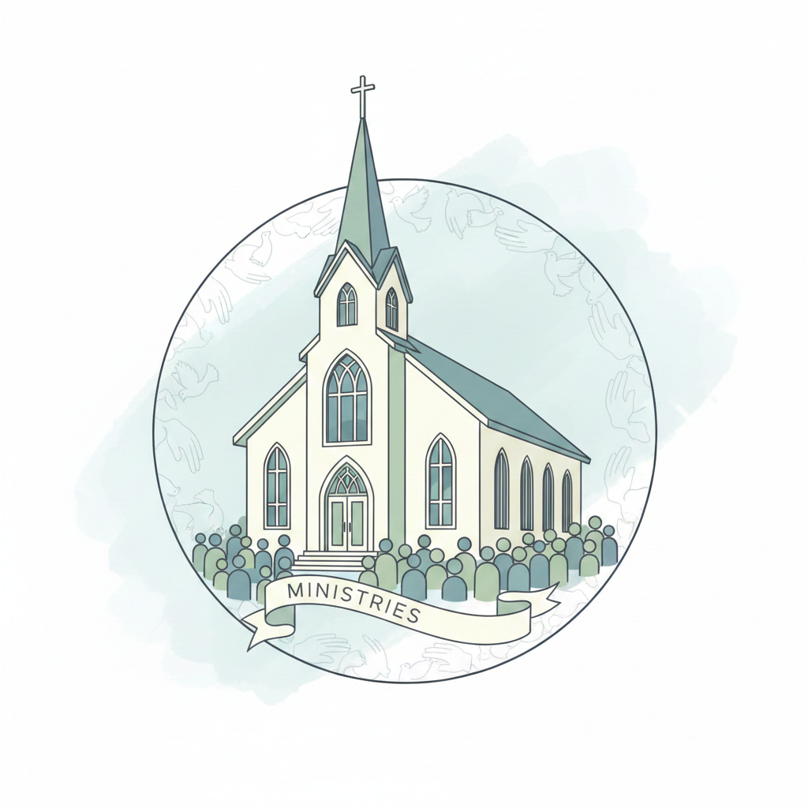

Domingo
Culto manhã
· Presencial na igreja | Live dos Cultos ao Vivo no Youtube /IBCanoas
"O Deus de toda graça, os fortalecerá e os porá sobre firmes alicerces" - 1° Pedro 5:10
É uma alegria ter você aqui! Somos uma igreja que ama a presença de Deus, valoriza pessoas e vive para anunciar o evangelho com graça e verdade.
Horários de Culto: Domingo às 10h e 19h30
Endereço: Rua Alexandre de Gusmão, 1844

Discipulado não é um ministério da igreja, mas o ministério da igreja, com base no que JESUS diz: “...vão e façam discípulos de todas as nações, batizando-os em nome do Pai, do Filho e do Espírito Santo, ensinando-os a guardar todas as coisas que tenho ordenado a vocês.” (Mateus 28.19, 20) O discipulado na Igreja Batista de Canoas acontece basicamente através do discipulado intencional, um a um ou por meio de microgrupos de discipulado.
Nosso ambiente de estudo bíblico no formato de aulas e ambiente de ensino; sendo também uma ferramenta de discipulado.
Semelhante a Escola de Discípulos, a Escola de Profetas acontece também no formato e ambiente de sala de aula; sendo basicamente, estudos bíblicos sobre liderança. O objetivo é capacitar pessoas para melhor servirem a Deus.
A Escola de Profetas Mirins é um caminho de discipulado e restauração infantil, onde cuidamos do coração, educamos emoções, renovamos a mente e formamos crianças para servir a Deus e às pessoas com caráter e propósito.
Este ministério atua na área de música, eventos e cultos da igreja; visando trazer a presença de Deus no meio da igreja e elevar a igreja à presença de Deus em adoração e louvor.
Este ministério planeja, organiza, mobiliza pessoas e promove na igreja as ações de evangelização de pessoas para crescimento da igreja.
Este ministério é responsável em servir as crianças da igreja e as que chegam na igreja, para que se sintam importantes e bem ambientadas nos espaços da igreja; com o objetivo de conduzi-las a JESUS.
Este projeto é um multiministério da igreja, oferecendo cursos de costura e costura laboral; com foco na evangelização de alunos(as). Sendo, de certa forma, uma braço do Ministério de Evangelismo e Missões.
Este ministério atua para fortalecimento dos casais através de encontros, palestras, retiros e cursos de terapia conjugal em grupo, como o curso Casados para Sempre.
A Caminhada de Restauração é uma ferramenta de ministério da igreja que visa a restauração de vidas e cura de feridas emocionais e comportamentos destrutivos, com base nos 12 Passos de Alcoólicos Anônimos e seus respectivos paralelos bíblicos; ou seja, um programa de 12 passos centrado em JESUS, onde cremos que não há nada que a presença de JESUS não possa curar.
O projeto Desperta Débora é um ministério constituído por mulheres, especificamente mães de oração, sejam mães legítimas ou mães do coração, que estão comprometidas a orarem incessantemente pelos seus filhos. O Desperta Débora tem um lema – Mães de joelhos, filhos de pé.
Este ministério atua com a ala feminina da igreja, promovendo crescimento e maturidade através de encontros, palestras, retiros, e também promovendo as mais diversas oportunidades de encontros denominacionais.
Este ministério atua com a ala masculina da igreja, promovendo crescimento e maturidade através de encontros, palestras, retiros, e também promovendo as mais diversas oportunidades de encontros denominacionais.
O Ministério de Células é a igreja reunida nas casas, promovendo tanto comunhão quanto edificação de pessoas. As células na Igreja Batista de Canoas acontecem no formato presencial e também on-line.
O ministério do Coral Kids trabalha com crianças através da música; ensinando, além de música, as verdades bíblicas; preparando-os para atuarem nos musicais da igreja.
· Presencial na igreja | Live dos Cultos ao Vivo no Youtube /IBCanoas
· Presencial na igreja | Live dos Cultos ao Vivo no Youtube /IBCanoas
· Sala de aula presencial e live no Instagram
· Sala de aula presencial e live no Instagram
· Sala de aula presencial
· Grupo de oração - Google Meet
Momentos de comunhão e palavra. Primeiro domingo do mês.
Celebração da Ceia, realizada no primeiro domingo de cada mês.
Encontro de alinhamento e planejamento com liderança.
Um culto especial para convidar amigos e familiares.
Um culto especial para convidar amigos e familiares.